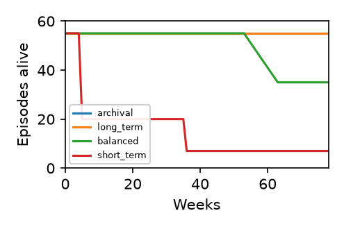

Re-derive time from experience. Polytemporal vectors, subjective τ, retention profiles.

| Profile | Alive @78wks |
|---|---|
| archival | 55 |
curl -fsSL https://raw.githubusercontent.com/ShingWong/positronic-opencode-plugin/beta/install.sh | bash
Full Paper (PDF, 6 pages, 198 KB) — Landing page (PDF) — arXiv source